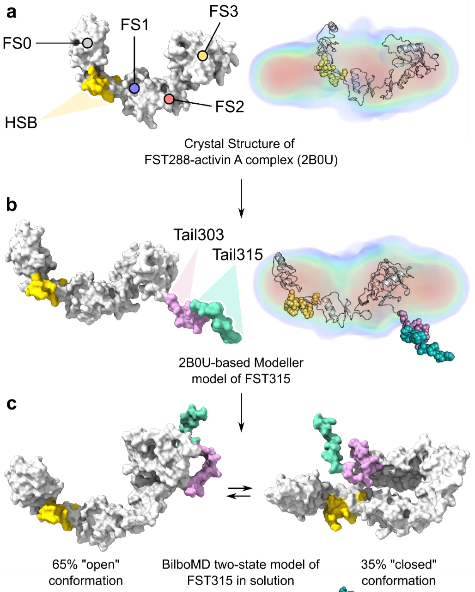

A universal, protease-activated mask for nanobodies
The case asked how to design a nanobody that stays inactive in circulation and switches on at a snakebite site. I chose the protease as the trigger and made the regulatory part reusable, so the same design works on other nanobodies. This page gives the design, then what happened when I ran it.
Where I have met this problem before
My PhD was on follistatin, a protein that carries its own tethered mask. The C-terminal tail of FST315 folds back onto the domain that binds heparan sulphate and competes with it, so the molecule has two states and the switch between them is set by how tightly the tail binds. I measured those affinities and resolved the two states by SEC-SAXS. The design problem on this page is the same problem, approached from the other direction.
Background: a tethered competitive regulator, measured PhD work on follistatin, which solves this same two-state problem naturally.
The construct on this page needs a tethered module that binds its own protein tightly enough to block and weakly enough to let go. Follistatin already does this. Its isoforms differ only at the C-terminus, and the longest, FST315, carries an acidic tail that folds back onto the FS1 domain — the same surface that binds heparan sulphate. The tail is an endogenous mask.





The question, and what I chose to work on
The brief described a viper bite site as having three local signals that are absent from circulation: an acidic pH of around 6.0 to 6.5, raised protease activity from tissue damage and from the venom itself, and local hypoxia. It asked for a computational pipeline that designs a nanobody masked in circulation and activated at the bite site by one or more of these signals, and asked whether a universal switch and standardised methods are possible.
I made two choices before designing anything.
| signal | what the evidence shows | decision |
|---|---|---|
| Protease | Gelatinolytic activity in exudate next to envenomed muscle peaks about an hour after the bite and comes from the venom's own metalloproteinases. Host enzymes arrive later. The signal is therefore early, abundant and proportional to the thing being neutralised. | Chosen as the trigger. |
| pH | No study has measured pH at a bite site. The nearest proxies, inflamed and infected tissue, sit near pH 6.8 to 7.0 rather than 6.0. A mask switching at 6.0 would rarely open. | Not used. I would measure it before designing against it. |
| Hypoxia | Argued from microvascular damage, never measured in envenomed tissue. No validated protein switch responds directly to oxygen. | Not used. |
Five modules
The pipeline generates constructs, scores them three separate ways, and combines the three scores into one ranked list. Each module is a slot. The methods listed under it are interchangeable, so a better generator or a better cleavage model can be dropped in without changing anything else.
| method | what it gives | status |
|---|---|---|
| Epitope graft | take the antigen's own contact segment | used here |
| ProteinMPNN | redesign a mask onto a fixed backbone | used here |
| RFdiffusion / RFantibody | generate new mask backbones | needs a GPU |
| BindCraft | one-shot binder design against the paratope | needs a GPU |
| Peptide language models | sequence-only proposals for short masks | not tried |
| method | what it gives | status |
|---|---|---|
| ESMFold confidence | whether a fold was predicted at all | used here |
| Core RMSD against the free nanobody | whether the fusion disturbs it | used here |
| Exposed hydrophobic surface | aggregation liability | used here |
| Unpaired cysteine count | disulfide scrambling | used here |
| AlphaFold 3 / Boltz-2 | a second opinion on the fold | GPU, or slow on CPU |
| Rosetta or FoldX | approximate stability | not tried |
| method | what it gives | status |
|---|---|---|
| Worm-like-chain tether model | the affinity range that can work | used here |
| Paratope occlusion from a predicted fold | whether the site is covered | used here, did not separate designs from controls |
| Tethered three-chain complex (Boltz-2) | whether the antigen still binds | used here |
| BioEmu or molecular dynamics | an ensemble instead of one structure | needs a GPU |
| Constant-pH or free-energy methods | quantitative affinity | not tried |
| method | what it gives | status |
|---|---|---|
| Linker accessibility and extension | whether a protease can reach it | used here |
| CleaveNet | generate linkers with a target cleavage profile | trained on human MMPs |
| ProsperousPlus / UniZyme | cleavage-site prediction | not tried |
| Substrate profiling data | the specificity the above models lack | does not exist for these proteases |
| method | what it gives | status |
|---|---|---|
| Pareto front | keep a design unless another beats it on every score | used here |
| Hard filters first | drop anything that cannot fold or cannot be cut | used here |
| Diversity selection | keep structurally different designs, not one family | not tried |
| Uncertainty-aware ranking | penalise designs the models disagree about | not tried |
The example, step by step
I ran the pipeline on an experimental nanobody-toxin complex from the same laboratory. Everything below is computational and nothing has been made, so no affinity, expression level or cleavage rate here has been measured.
| step | status | what happened |
|---|---|---|
| Measure the complex | I ran this | 2.5 Å structure, 19 paratope residues, N-terminus 12.42 Å from the nearest of them. |
| Price the tether | I ran this | Gives a usable mask affinity between 99 nM and 129 µM, and says to attach at the N-terminus. |
| Build a construct library | I ran this | 31 constructs: grafted masks from the antigen, plus scrambled, truncated and inert controls. |
| Fold them (ESMFold) | I ran this | 31 structures predicted on CPU. |
| Score masking by occlusion | I ran this and it did not work | Grafts occlude +4.0% of the paratope and the inert control +4.0%. The control scores as well as the design, so the measure does not separate them. |
| Redesign masks (ProteinMPNN) | I ran this and it did not work | 93 masks, all scoring better than their parent by ProteinMPNN's own measure, but that score does not predict occlusion (r = -0.15). |
| Score the trigger: can a protease reach the linker | I ran this | Works and separates the library. Accessibility falls from 0.97 at 5 linker residues to 0.19 at 30. |
| Score the trigger: will this protease cut this sequence | Proposed, not done | Needs substrate specificity data for the proteases in question. No such dataset exists for snake venom metalloproteinases. |
| Predict the masked complex (Boltz-2) | I ran this and it did not work | The control put only 7% of its toxin contacts on the known paratope, so it cannot be trusted. |
| Rank designs across the scores | Proposed, not done | Two of the three scores work, so a Pareto front over all three cannot be built yet. |
| Make anything | Proposed, not done | Nothing has been synthesised. No measured affinity, expression or cleavage exists. |
Set aside: 9GCN, where the geometry defeats the measurement The pipeline was run end to end on this complex first. Both controls failed, for a reason worth keeping.
VHH TPL1158_01_C09 with alpha-cobratoxin, 3.0 Å. The paratope sits almost entirely in CDR3 (11 of 16 residues, with CDR2 contributing none) — and the N-terminal residue Q1 is itself part of the paratope, burying 52 Ų.
That makes masking trivially easy and measuring it impossible. Any peptide tethered at that terminus starts on top of the binding site, whatever its sequence, so occlusion cannot tell a designed mask from a random one.
| mask kind | mean occlusion % | n |
|---|---|---|
| inert control | +18.1 | 5 |
| scrambled control | +16.1 | 5 |
| truncated control | +15.9 | 5 |
| epitope graft | +14.3 | 10 |
The inert poly-glycine control occluded +18.1% of the paratope against +14.3% for the designed grafts and +16.1% for the scrambled ones. The control scored highest. There is no separation to rank on.
The second control failed too. Predicting the free nanobody with its toxin should have reproduced a pose the crystal structure already shows. Only 28% of the predicted contacts landed on the known paratope, so the complex module could not adjudicate masking here either.
Why it is still here. The constraint module had already flagged it: the N-terminus was 0.0 Å from the nearest paratope residue, against 42 Å for the C-terminus. That number was visible before a single construct was folded, and it is the criterion the replacement system was chosen on. A pipeline that measures the geometry first can tell you that a target is unsuitable before you spend anything on it.
Measuring the complex
The paratope is defined as the residues that lose solvent-accessible surface when the complex forms, and the geometry that matters for a tether is how far each terminus sits from that surface.

| geometry | Å | consequence |
|---|---|---|
| N-terminus to paratope centroid | 21.21 | a short linker already reaches |
| N-terminus to nearest paratope residue | 12.42 | the N-terminus is in the paratope |
| C-terminus to paratope centroid | 34.21 | 1.6× further to span |
| paratope maximum extent | 25.14 | surface a mask must cover |
Pricing the tether
A tethered mask behaves as though present at an effective concentration set by the linker. Treating the Gly/Ser linker as a worm-like chain with persistence length 4.5 Å and 3.8 Å per residue gives Ceff at the span measured above — a distance taken from the structure, not assumed.
Ceff(d) = 1660.54 · (3 / 2π⟨r²⟩)3/2 · e−3d²/2⟨r²⟩ [M]
Pmasked = Ceff / (Ceff + KD,M)
PNT = (T/KD,T) / (1 + T/KD,T + M/KD,M)


Candidates, and the controls that make them legible
One peptide is already known to engage this paratope: the antigen's own contact segment. Grafting it needs no generative model and brings its own negative controls.
| antigen segment | sequence | length | contacts |
|---|---|---|---|
| C40–T55 | CGCPTVKPGIKLNCCT | 16 | 16 |
| E20–N22 | ETN | 3 | 3 |
| mask | sequence | aa | kind | origin |
|---|---|---|---|---|
| epi1 | CGCPTVKPGIKLNCCT | 16 | epitope graft | antigen C40-T55, 16 contact residues |
| epi1_half | CGCPTVKP | 8 | truncated control | leading half of the graft |
| epi1_noCys | SGSPTVKPGIKLNSST | 16 | epitope graft | epi1 with cysteines substituted to serine |
| epi1_scram | PIVKCKNGGCCTTLCP | 16 | scrambled control | same composition, shuffled (seed 42) |
| epi2 | ETN | 3 | epitope graft | antigen E20-N22, 3 contact residues |
| polyG | GGGGGGGG | 8 | inert control | no designed interaction; masking should fail |
Redesigning the mask on its own backbone
The grafted mask is borrowed from the antigen, so nothing about its sequence is tuned to this paratope. Taking each folded graft as a backbone and letting ProteinMPNN rewrite only the mask positions — nanobody and linker held fixed — turns the graft into a starting point. The redesigned constructs are then folded and scored exactly as before, so the two sets are directly comparable.


| mask | parent | MPNN score | occluded % | min CA–CA Å | VHH pLDDT | core RMSD Å |
|---|---|---|---|---|---|---|
| VPCPPAGPGDPSSCGG | epi1_L10 | 1.659 | +11.8 | 6.58 | 84 | 0.11 |
| PPCPLRGPGQPLQCAA | epi1_L10 | 1.576 | +10.5 | 6.87 | 84 | 0.11 |
| APCPLRGPGQPLQCAA | epi1_L10 | 1.585 | +10.5 | 6.92 | 84 | 0.11 |
| APCPVNGPGWPLPCSS | epi1_L10 | 1.644 | +9.8 | 6.27 | 84 | 0.11 |
| PPPPPLGPGDPPPAAA | epi1_L10 | 1.643 | +8.7 | 6.6 | 85 | 0.12 |
| APAPLLQPGVPAPIGS | epi1_L20 | 1.569 | +8.5 | 7.24 | 82 | 1.66 |
| APCPPLGPGQPASCSS | epi1_L10 | 1.605 | +8.5 | 7.1 | 84 | 0.12 |
| APCPPLGPGQPLPCSG | epi1_L10 | 1.478 | +8.3 | 6.8 | 84 | 0.11 |
| APCPPLGPGDPLPCSG | epi1_L10 | 1.472 | +8.2 | 6.86 | 85 | 0.12 |
| APCPPLGPGQPLSCSS | epi1_L10 | 1.543 | +7.5 | 7.09 | 84 | 0.12 |
| SPCPLEGPGWPSPCQL | epi1_L10 | 1.681 | +7.3 | 5.72 | 85 | 0.10 |
| PPCPLPGPGQPLPCAG | epi1_L10 | 1.462 | +7.2 | 7.9 | 84 | 0.11 |
Can the protease reach the linker at all?
A protease does not simply recognise a sequence; it threads the substrate through its active-site cleft, which requires the linker to be both exposed and extended. That is a necessary condition for cleavage and it is independent of sequence — a linker packed against the nanobody cannot be cut however good its motif. It is also computable from the folded constructs, with no specificity data at all.
| linker | design window (decades) | fraction exposed | extension ratio | accessibility |
|---|---|---|---|---|
| 5 residues | 2.34 | 1.00 | 0.69 | 0.97 |
| 10 residues | 3.06 | 1.00 | 0.37 | 0.53 |
| 15 residues | 3.12 | 0.98 | 0.31 | 0.43 |
| 20 residues | 3.08 | 0.98 | 0.24 | 0.34 |
| 30 residues | 2.96 | 0.95 | 0.14 | 0.19 |

Measuring whether the site is covered
Does the mask actually reach the paratope?
Every construct folded with ESMFold, then the paratope's solvent-accessible surface in the fusion compared against the same residues in the folded free nanobody. The grafts are read against their scrambled, truncated and inert controls at matched linker length; the controls are the reason the comparison means anything.


| construct | kind | linker | occluded % | min CA–CA Å | contacts <8 Å | VHH pLDDT | core RMSD Å |
|---|---|---|---|---|---|---|---|
| polyG_L20 | inert control | 20 | +8.9 | 6.57 | 3 | 83 | 1.72 |
| epi1_scram_L30 | scrambled control | 30 | +8.5 | 5.74 | 2 | 81 | 1.72 |
| epi1_L15 | epitope graft | 15 | +7.8 | 6.97 | 3 | 83 | 0.13 |
| polyG_L15 | inert control | 15 | +7.7 | 4.4 | 8 | 84 | 1.70 |
| epi1_scram_L20 | scrambled control | 20 | +7.1 | 6.86 | 3 | 82 | 1.71 |
| epi1_noCys_L15 | epitope graft | 15 | +6.5 | 6.46 | 2 | 83 | 1.71 |
| epi1_L30 | epitope graft | 30 | +6.3 | 7.09 | 1 | 81 | 1.76 |
| epi1_L20 | epitope graft | 20 | +6.1 | 7.48 | 2 | 82 | 0.16 |
| epi1_noCys_L10 | epitope graft | 10 | +6.0 | 6.72 | 2 | 84 | 1.68 |
| epi1_L10 | epitope graft | 10 | +5.9 | 7.49 | 1 | 84 | 0.14 |
| epi2_L30 | epitope graft | 30 | +5.3 | 19.78 | 0 | 82 | 1.75 |
| epi1_noCys_L20 | epitope graft | 20 | +5.2 | 6.9 | 1 | 82 | 1.76 |
| epi1_noCys_L30 | epitope graft | 30 | +5.1 | 5.65 | 3 | 81 | 1.75 |
| epi1_half_L15 | truncated control | 15 | +4.9 | 9.94 | 0 | 84 | 1.64 |
| epi1_scram_L15 | scrambled control | 15 | +4.2 | 7.53 | 1 | 83 | 1.65 |
| epi1_half_L10 | truncated control | 10 | +3.6 | 7.91 | 1 | 86 | 0.12 |
| polyG_L30 | inert control | 30 | +3.5 | 16.98 | 0 | 82 | 1.73 |
| epi1_noCys_L5 | epitope graft | 5 | +3.1 | 8.33 | 0 | 85 | 1.63 |
| epi1_scram_L5 | scrambled control | 5 | +2.6 | 17.19 | 0 | 85 | 0.14 |
| epi1_half_L30 | truncated control | 30 | +2.4 | 13.33 | 0 | 82 | 1.79 |
| epi1_half_L20 | truncated control | 20 | +1.9 | 12.39 | 0 | 83 | 1.74 |
| epi1_scram_L10 | scrambled control | 10 | +1.7 | 10.27 | 0 | 85 | 0.12 |
| epi1_L5 | epitope graft | 5 | +0.9 | 12.07 | 0 | 84 | 0.16 |
| epi2_L20 | epitope graft | 20 | +0.7 | 21.48 | 0 | 83 | 1.70 |
| epi2_L5 | epitope graft | 5 | +0.7 | 23.83 | 0 | 87 | 1.21 |
| epi2_L10 | epitope graft | 10 | +0.6 | 12.85 | 0 | 86 | 1.59 |
| epi2_L15 | epitope graft | 15 | +0.4 | 18.89 | 0 | 85 | 1.68 |
| polyG_L10 | inert control | 10 | +0.3 | 15.92 | 0 | 85 | 1.69 |
| epi1_half_L5 | truncated control | 5 | -0.1 | 20.91 | 0 | 86 | 0.13 |
| polyG_L5 | inert control | 5 | -0.3 | 19.71 | 0 | 86 | 1.57 |
With the mask on, can the antigen still bind?
Occlusion says the mask covers the site. It does not say the antigen is excluded — those are different claims, and only a two-chain prediction separates them. The free nanobody with its toxin is the calibration case: the crystal structure already answers it, so how well the prediction recovers that answer sets how much the masked cases are worth.
| case | what it tests | contacts | buried Ų | on paratope | min |
|---|---|---|---|---|---|
| control_free_vhh | free nanobody with toxin — the crystal structure already answers this, so it calibrates the rest | 240 | 847 | 0.07 | 1 |
| masked_epi1_L5 | grafted mask on the shortest linker | 601 | 2092 | 0.11 | 2 |
| masked_epi1_L20 | same mask, linker four times longer | 1190 | 2863 | 0.12 | 2 |
| masked_polyG_L5 | inert mask — should not block | 422 | 1460 | 0.26 | 2 |
Keeping the three scores separate
A design has to satisfy all three requirements. A construct that cannot be expressed is of no use however well it masks, and one that cannot be cut is of no use however well it expresses. If the three scores were averaged, a high score on one would hide a failure on another, so instead I keep a design unless some other design is at least as good on every score and better on at least one. No weights are applied.
Of 123 scored designs, 21 survive this test. The rest are beaten outright by something else.
| construct | feasibility | trigger | unmasking |
|---|---|---|---|
| mpnn092_epi2_L5 | 0.395 | 1.000 | 0.004 |
| mpnn065_epi1_half_L5 | 0.343 | 0.957 | 0.011 |
| mpnn075_epi1_half_L5 | 0.322 | 0.974 | 0.010 |
| epi2_L5 | 0.244 | 0.979 | 0.007 |
| mpnn061_epi1_half_L5 | 0.193 | 1.000 | 0.006 |
| epi1_noCys_L5 | 0.155 | 1.000 | 0.031 |
| mpnn089_epi1_half_L5 | 0.178 | 1.000 | 0.006 |
| mpnn049_epi2_L10 | 0.401 | 0.621 | 0.029 |
| mpnn053_epi1_L10 | 0.364 | 0.431 | 0.087 |
| mpnn048_epi2_L10 | 0.161 | 0.648 | 0.015 |

The gaps, named
| module | what is missing | what it would take |
|---|---|---|
| 02a Trigger | no selectivity score at all | data cleavage measurements for the relevant proteases against a host negative panel. Published substrate profiling puts a P1′ leucine preference on both the venom metalloproteinases and the host MMPs, so a linker designed to be cut by one would likely be cut by the other. Selectivity, not cleavability, is what has to be measured and what no current model predicts |
| 01 Generate | no de novo backbones | GPU RFdiffusion or BindCraft would widen the search beyond grafted and redesigned peptides |
| 02b Binding | one structure per design, no ensemble | GPU BioEmu-2 would sample conformations instead of a single pose |
| 03 Rank | scores computed, selection not automated | a Pareto front with uncertainty attached, once 02a exists to rank against |
| 04 Measure | nothing has been made | the loop is open until it is |
Where the numbers come from
Every value and chart here is produced by the analysis code, run in stages against one deposited structure. Each stage writes its results to a file and this page is generated from those files, so nothing is typed in by hand. All of it runs on CPU.
| stage | method | produces |
|---|---|---|
| Measure the complex | Shrake-Rupley surface burial | paratope, CDRs, terminal geometry |
| Price the tether | worm-like chain | effective concentration, masking ceiling, release floor |
| Build the library | antigen epitope graft, with controls | mask × linker constructs |
| Fold and measure | ESMFold | paratope occlusion per construct |
| Redesign the mask | ProteinMPNN | new masks on the folded backbone |
| Test the competition | Boltz-2 | two-chain complex with the antigen |
Code and stage outputs: github.com/Natalija-Stepurko/dtu_postdoc
Taking it to the laboratory
Everything above is computational. This section is separate from the pipeline because none of it has been done, and none of it is part of the design. It sets out how large the campaign would have to be and how the first measurements would be used. The counts come from published hit rates for binder design, which for conditional binders are far lower than for ordinary binders, and the compute is scaled from runtimes measured on this machine.
Three first, and what they are for
The first order is three constructs, and its purpose is diagnosis rather than success. Each tells you which stage of the pipeline is wrong:
| measurement | reads out | if it fails, the problem is |
|---|---|---|
| Purification — ÄKTA trace, single band on the gel | can it be made at all | the feasibility score: fold, aggregation, developability |
| Octet, toxin affinity with the protease absent | is it masked | the masking half of the unmasking score |
| Octet, toxin affinity with the protease present | does it activate | the trigger score, or the release half |
Then twenty to thirty, and the pipeline gets scored
Once the loop reliably produces working candidates, the point of a larger batch changes. It is no longer about finding a molecule; it is about measuring whether the scores predict anything. With twenty to thirty measured constructs, each score can be scored in turn.
Sources
- Damsbo A. et al. Co-crystal of VHH TPL1158_01_C09 with α-cobratoxin. PDB 9RIU
- Ahmadi S. et al. Nanobody-based recombinant antivenom for cobra, mamba and rinkhals bites. Nature 647:716–725 (2025). 10.1038/s41586-025-09661-0
- Desnoyers L.R. et al. Tumor-specific activation of an EGFR-targeting probody. Science Translational Medicine 5:207ra144 (2013). 10.1126/scitranslmed.3006682
- Zhou H.-X. Loops in proteins can be modeled as worm-like chains. Journal of Physical Chemistry B 105:6763–6766 (2001). 10.1021/jp011355n
- Lin Z. et al. Evolutionary-scale prediction of atomic-level protein structure with a language model. Science 379:1123–1130 (2023). 10.1126/science.ade2574
- Dauparas J. et al. Robust deep learning-based protein sequence design using ProteinMPNN. Science 378:49–56 (2022). 10.1126/science.add2187
- Wohlwend J. et al. Boltz-1 and Boltz-2, open biomolecular interaction models. github.com/jwohlwend/boltz
- Shrake A., Rupley J.A. Environment and exposure to solvent of protein atoms. Journal of Molecular Biology 79:351–371 (1973). 10.1016/0022-2836(73)90011-9
- Martin-Alonso C. et al. Deep learning guided design of protease substrates. Nature Communications 17:54 (2026). 10.1038/s41467-025-67226-1